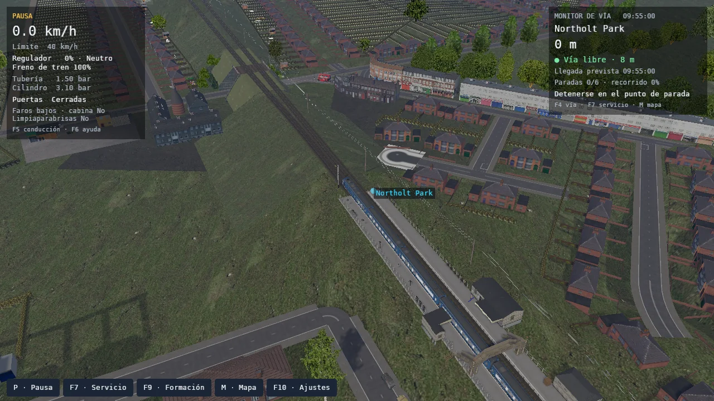

Cabinas de día y de noche
Las agujas, niveles y capas de fuego usan los gráficos originales. La luz interna cambia las texturas de cabina; con 5 podés recorrer los salones del Pullman.

openrailsrs · en desarrollo
Salís de Northolt Park y tenés seis paradas hasta Gerrards Cross. Podés manejar desde la cabina original, seguir el tren desde afuera y guardar la partida para continuar después.
Chiltern v4
También probamos el servicio de Banbury General a High Wycombe, con paradas en Bicester North y Princes Risborough.
En la biblioteca elegí Chiltern v4, la actividad RS_Football Special y la formación Birmingham Pullman. El viaje llega hasta el final con el escenario cargado en las cuatro estaciones. Se conserva el horario del autor: podés llegar con demora.
Las agujas, niveles y capas de fuego usan los gráficos originales. La luz interna cambia las texturas de cabina; con 5 podés recorrer los salones del Pullman.
Con la formación de vapor podés detenerte junto a la grúa de Banbury y abastecer desde B. El brazo abre al conectar y vuelve a su lugar al terminar.
Se completaron las cuatro paradas. La memoria bajó en el caso medido; todavía hay tirones al cargar recursos.
Ver resultados y pendientesEl servicio de seis estaciones
El recorrido de Northolt Park a Gerrards Cross sigue disponible. En cada estación tenés que detenerte, atender a los pasajeros y esperar la salida.
Acá empieza la partida. El tren está detenido; el monitor te avisa cuándo podés cerrar las puertas y salir.
Controles para el primer tramoDentro del Pullman

Regulador, frenos, inversor y los instrumentos del tren. Podés cambiar entre cabina 2D, 3D y cámara exterior, y reasignar las teclas.
El escenario se carga a medida que avanzás. Otros dos trenes circulan por la ruta y afectan las señales. La hora y el clima se eligen en el menú.
El resumen muestra tus paradas y las demoras. Si sólo querés probar los controles, hay una opción para reducir la espera de pasajeros a cinco segundos.
Sobre el proyecto
openrailsrs es un simulador ferroviario de código abierto. Queremos que las rutas y los trenes de Open Rails puedan usarse en una partida completa, con controles familiares y una implementación nueva en Rust.
Tomamos Open Rails 1.6.1 como referencia y usamos su código para comparar el comportamiento. Ya se pueden terminar los recorridos de Chiltern y Demo Model 1 que probamos; todavía quedan diferencias en otros vehículos, scripts y operaciones.
Qué funciona y qué falta